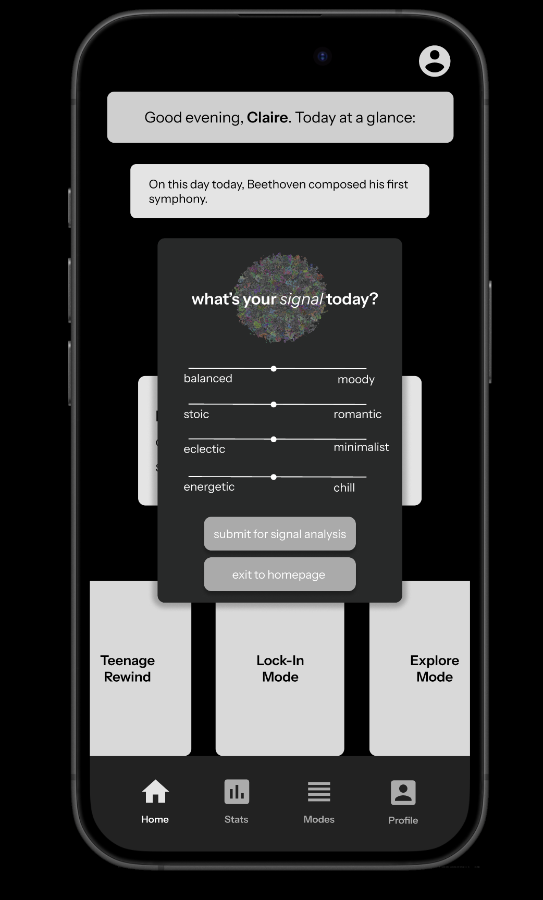

a taste of life
Nietzsche once said, "...if you gaze for long into an abyss, the abyss gazes also into you." So it is that this voidal structure gazes into the deepest fibers of your being. How would you describe it? Rippling, expansive, particle-rich? Adaptive, detailed, grainy, ambiguous? Each word that comes to your mind is a reflection of your assumptions, your intuitions, your perceptions of the world and yourself. So do you gaze at the void, or does the void gaze into you?
A colorful blob--inspired by my love of blob-like structures. Inspired by that unrelenting need to curl up in a ball and never come out. Yet the blob dances. It gives you hope. If a blob can dance, and be colorful at that, why can't you?
a story about what it means to be a "monster," in all its various forms. through the simple act of surviving and persisting, one must transform.
I and several other student designer sought to make an app that addresses the inefficiencies of algorithmic recommendations by music apps such as Spotify and Apple Music. Ever struggled to find music that succinctly matches your mood? Though Spotify and Apple music provide personalized recommendations, our music mood matcher mobile app will employ an algorithmic recommendation system based on detailed mood tracking and user feedback to learn your personal moods and music tastes. Check out the interactive prototype above!
© Claire Herzog 2025